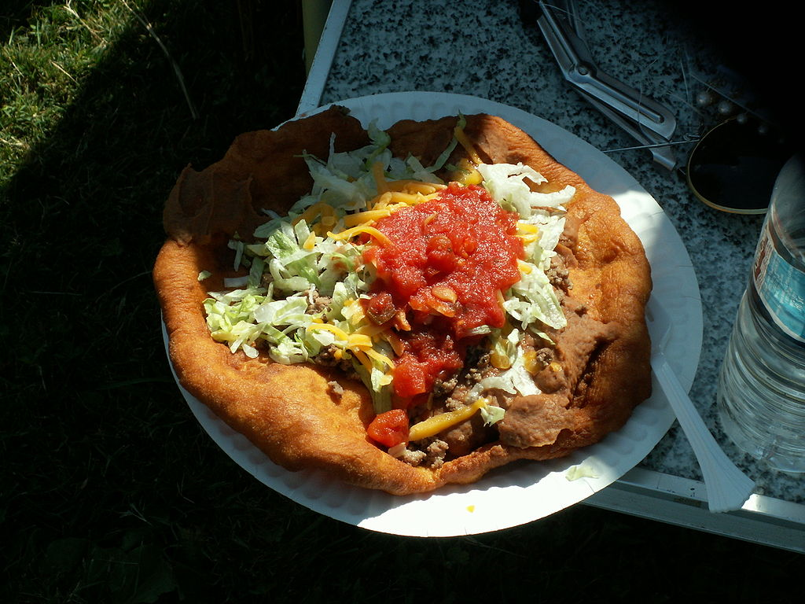
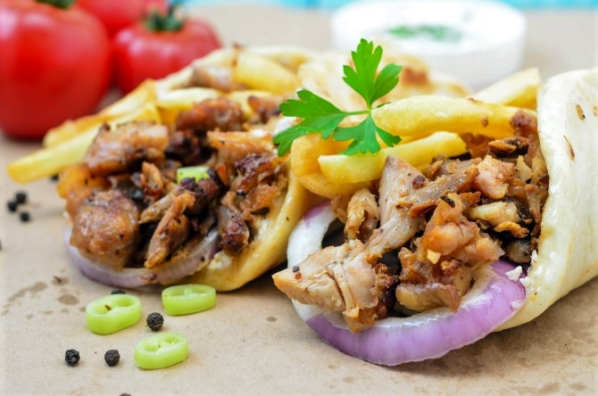

Introduction
When the Native Americans resided on reservations, they created the fry bread recipe. The food is commonly sold at food stands run by Native Americans today.
When I tasted it myself at a food stand outside the Heard Museum in Phoenix Arizona, it was a pure celebration. The freshness of the garnish contrasted perfectly with the greasiness and firm texture of the deep-fried bread.

'Frybread taco' by John Pozniak / Gentgeen on wikipedia (see source). Licensed under CC BY-SA 3.0.
Recipe
- 2 ½ cups Flour
- 1Tbs Salt
- 1Tbs Baking Powder
- 1 cup Hot Water
- 3Tbs Olive Oil

Instructions
- Mix salt, flour, baking powder with your hands or fork, and gradually add the water.
- Mix in olive oil and let the mixture rest someplace warm for 30 minutes to 2 hours.
- Stretch out a golfball-sized amount of dough with a roller (but don't let it rip).
- Carefully!! lay the rolled out dough in the hot oil and flip when the bread turns golden (care that frying like this comes with many risks, so learn how to mitigate).
- You can keep the finished pieces wrapped in alloy or in the oven to keep them warm as you finish the other ones.
- Add garnish of choice: salsa, salad, sour cream, minced meat, beans, jalapeno, cheese, tomatoes and olives.
Further discovery
A Native American discussing the cultural intricacies of frybread and adding some history about native life on the reservation.